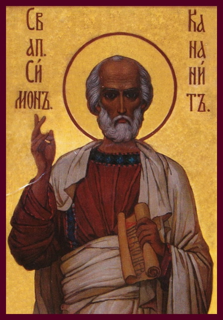

23 05 2013 (1451 день 21 час назад)
Святой Апостол Симон Кананит (Зилот).

Есть простые земные радости, согревающие человеческое сердце, – семейный очаг, дружеская беседа, домашний уют. Многим кажется, что в этом-то и заключено все лучшее в нашей жизни. Так видится людям, еще находящимся на уровне душевности, еще не знающим озарений духовных. Но для избранников наступает мгновение, когда они слышат властный зов духа, любящего до ревности, – и все остальное становится для них ненужным. Так было со святым Симоном Зилотом. В одночасье жизнь его словно переломилась надвое. Святой Симон ушел с собственного брачного пира, оставил и красавицу-невесту, и круг веселых друзей, и дом, нажитый нелегкими трудами, – он бросил все это, потому что услышал зов Небесной Любви.
Маленький галилейский городок Кана, где праздновал свадьбу святой Симон, находился по соседству с другим городком – Назаретом. Добрые люди обоих городов знали друг друга, вместе исполняли обряды отеческой веры, делились житейскими радостями. Среди гостей, приглашенных святым Симоном на брачный пир, оказались и жители Назарета: Пресвятая Мария и Сын Ее Иисус со Своими учениками.
То был скромный праздник. Святой Симон был богат благочестием, а не мирским достатком. Но каждому, даже бедняку, хочется, чтобы его торжество было не хуже, чем у других. А вот на свадьбе святого Симона бедность проявилась так, что грозила испортить общее веселье. Гостям не хватило вина. По восточным обычаям такое считается позором.
Это маленькое горе бедных людей нашло отклик в сострадательном сердце Девы Марии. Она одна знала силу Своего Божественного Сына, знала, как легко Он может помочь беде. И Матерь Иисуса говорит Ему: вина нет у них (Ин. 2, 3).
Так впервые Мать-Молебница человечества обратилась с прошением к Сыну Своему и Господу. Речь шла о простом, о житейском. Сын Божий сошел на землю ради вселенского подвига – и, казалось бы, что Ему до того, весела или печальна будет свадьба каких-то галилейских бедняков? В великих судьбах Господних свершение чудес Христа являлось преждевременным. И Господь сказал Матери Своей: что Мне и Тебе, Жено? еще не пришел час Мой (Ин. 2, 4). Но нет! Всемогущий Бог покорился смиренному молению Материнскому.
В словах Божественного Сына слышался отказ, но Пречистая Мать верила, что Ее просьба будет исполнена. И вот по воле Иисуса в сосудах, где только что была вода, заискрилось душистое вино. С радостными возгласами подняли гости заздравные чаши. А распорядитель пира, не зная о совершившемся чуде, удивленно сказал жениху: всякий человек подает сперва хорошее вино, а когда напьются, тогда худшее; а ты хорошее вино сберег доселе (Ин. 2, 10).
Как умилительно первое чудо Христово, явленное в Кане Галилейской! Здесь простой радостью согрел простые сердца Всевышний. Здесь Господь освятил человеческий брак и придал ему таинственный смысл. Здесь, в жилище бедняка, на мирском празднике, омраченном нуждой и заботой, началось шествие Спасителя, дивными знамениями указывающего людям путь к Небесному счастью.
В Кане Галилейской открылся несравненный дар Господень роду нашему – заступничество Пресвятой Богородицы. Земная по происхождению, Матерь Божия снисходительна к нашим слабостям, сострадательна к нашим житейским печалям. Нет, не Сама Она вершит судьбы мироздания, но кроткая молитва Матери привлекает к нам милости Всемогущего Сына Ее, как это было на браке в Кане.
Так положил Иисус начало чудесам в Кане Галилейской и явил славу Свою; и уверовали в Него ученики Его (Ин. 2, 11). Да, первые Апостолы Христовы, видя превращение воды в вино, убедились: Он – Истинный Мессия. Служители и гости брачные были также поражены чудом. Но более всех был потрясен жених, святой Симон Зилот.
Греческое прозвание Зилот или еврейское Кананит означает Ревнитель. Зилотами именовали тех, кто отличался особой ревностью по Богу, стремлением к Высшему. Таким боголюбцем, черпавшим в вере чистейшую отраду сердца, являлся святой Симон. И как неожиданно, как странно столкнулись в его жизни два призыва: земной и Небесный! Он испытывал одну из сильнейших мирских радостей: праздновал свою свадьбу. Но доброе вино, в которое превратилась чистая вода, внезапно охладило кровь и просветлило взор святого Симона Ревнителя. Оглушаемый шумом пиршества, опьяняемый любовью к невесте, он вдруг узнал среди своих гостей Спасителя мира. Знакомый Незнакомец, скромный плотник Иисус из Назарета, то был – Христос! Этого мгновения ждали и не дождались древние патриархи, о нем возглашали пророки, к нему стремились тоскою и надеждой поколения праведников – и вот святой Симон Зилот воочию видел перед собою Мессию. Земные светильники померкли в глазах Ревнителя, узревшего Горнее сияние.
Когда Иисус покидал Кану Галилейскую, среди Его учеников шел и святой Симон. Он следовал за Господом, не оглядываясь на родной город, где оставались его близкие, его невеста, его дом. Пламенный Ревнитель, он забыл все земные чувства ради Божественной Любви. Он ушел со своей свадьбы, чтобы стать гостем на брачном торжестве Небесного Жениха. Так в числе ближайших Апостолов Христовых появился святой Симон Зилот, Симон Кананит.
Кончилось вино на свадьбе святого Симона, но Иисус Христос щедро восполнил эту потерю лучшим, сладчайшим вином вечности. Последуя Спасителю, Апостол Симон вбирал в свою жаждущую душу чудо за чудом, знамение за знамением, слово за словом Божественного Учителя. То было блаженство несравненное.
Однако во дни Голгофские узнал святой Симон великую скорбь. Иисус был распят – и Симона Ревнителя, как и других Апостолов, постигло малодушное сомнение. Тогда-то обожгло его сердце воспоминание о покинутой в Кане Галилейской земной радости – неужели напрасна была эта жертва? Неужели и Христово Учение оказалось бессильно перед вселенской злобой – и для человека нет ничего лучшего, чем наслаждаться мирскими благами, заглушая в себе предчувствие гибели? Так если мы в этой только жизни надеемся на Христа, то мы несчастнее всех человеков (1 Кор. 15, 19).
Но счастливее всех человеков стали Апостолы Христовы, когда явился им Воскресший Учитель. Их смутные догадки, их невнятные надежды сменились озарением – знанием тайны тайн Божиих. Апостолам выпала высочайшая честь: сделаться участниками деяний Божественной любви для спасения падшего человечества. В день Пятидесятницы восприняв в души свои Духа Святого, они стали непобедимыми воинами Господними: приняли всеоружие Божие, препоясали чресла свои истиною, и облеклись в броню праведности, и обули ноги свои в готовность благовествовать мир; взяли щит веры, угашающий все раскаленные стрелы лукавого; и шлем спасения взяли, и меч духовный, который есть Слово Божие (см.: Еф. 6, 13–17).
Так шли они к народам и племенам земли, возвещая им спасительную Истину Христову. Среди апостольских подвигов один из самых ярких – путь святого Симона Зилота. Духоносный ревнитель, он пересек в своих странствиях Африку, Азию и Европу, от знойной Мавритании до туманной Британии неся заблудшим свет веры. Венец славы, мученическую смерть за Христа святой Симон принял в Абхазии. Язычники распяли его на кресте – так этот ревностный ученик последовал до конца Господу Иисусу, чтобы стать желанным гостем брачного пиршества Христова в Небесном Царстве.
Тело Апостола Симона было погребено в городе Никопсии близ Сухуми, над его могилой верные воздвигли храм Божий. Доныне сохранилась пещера, в которой жил святой Апостол, когда совершал труд Благовестника. На месте его подвигов в прошлом столетии был основан Новоафонский монастырь в честь святого Симона Кананита. В наше время в тех краях происходило страшное: один православный народ, одичавший среди смут нынешнего века, истребляет другой православный народ – длится безумное братоубийство, длится на земле, освященной деяниями великого Ревнителя Правды Божией.
Да, этот падший мир по-прежнему лежит во зле: льются слезы и кровь, множатся бедствия и преступления. Но христиане знают бессилие мирского беснования, ибо душам их светит Солнце Правды – Христос Искупитель, вводящий спасенных людей в вечное Царство добра, справедливости и любви.
Немногим доступна та пламенная ревностность, которой обладал святой Симон Зилот. Не каждый способен ради высочайшего боголюбия отказаться от всех земных радостей и привязанностей. Но каждый, хотящий спасти свою душу, может и должен среди мирских забот помнить о высшем своем призвании.
Как часто мы забываем разницу между временным и вечным! Житейские дела и отношения кажутся нам важнее, чем наша участь в бессмертии. Земных невзгод мы боимся больше, чем Страшного суда Божия. Стараясь понравиться и угодить людям, мы пренебрегаем своим долгом перед Небесным Отцом. Так, в духовной слепоте и неразумии мы размениваем доверенную нам жемчужину Царствия на мелкие побрякушки – из-за земных пристрастий жертвуем тем, чем жертвовать не имеем права. Да блюдет себя каждый, чтобы блуждающие мирские огоньки не увели его от Божественного Света, не довели до нескончаемой пагубы. Когда земное начинает заслонять для нас Небесное – да послужит нам укоризной и вразумлением память о святом Симоне Зилоте и множестве подобных ему ревнителей по Богу, считавших мирские блага ничтожным мусором в сравнении с сокровищем Любви Господней.
Большинство наших земных утех, словно дешевое вино, быстро превращается в кислый уксус. Только сладчайшее вино Христовой веры способно обрадовать наши сердца и оживить наши души даже в смертный час. Воззовем же к жениху из Каны Галилейской, избравшему высший удел святому Симону Ревнителю, дабы и нам возжаждать доброго вина вечности, чтобы насладиться им на брачном пиру Господа Иисуса. Известно премудрости учения в душах благочествующих положшаго, во хвалении ублажим, яко Богоглаголивого вси Симона: Престолу бо Славы ныне предстоит и со бесплотными веселится, моляся непрестанно о всех нас. Аминь.
Владимир (Иким), митрополит Омский и Таврический
23 мая в Абхазии отмечают День Святого Апостола Симона Кананита. Этот день имеет большое значение не только для православной Абхазии, но также значим и для всего христианского мира. Это один из главных весенних праздников абхазской православной церкви после Пасхи. В этот день сотни верующих из Абхазии и российских паломников приходят помолиться в храме апостола Симона Кананита в ущелье реки Псырцха, посещают пещеру в скале, где жил Симон Кананит.
Молитва
Святый славный и всехвальный апостоле Христов Симоне, сподобивыйся прияти в дом твой в Кане Галилейстей Господа нашего Иисуса Христа и Его Пречистую Матерь, Владычицу нашу Богородицу, и очевидцем быти преславнаго чудесе Христова, на браце твоем явленнаго, претворения воды в вино! Молим тя с верою и любовию: умоли Христа Господа претворити души наша из грехолюбивых в боголюбивыя: сохрани и соблюди нас молитвами твоими от искушений диавольских и падений греховных, и испроси нам свыше помощь во время уныния и безпомощия нашего: да не преткнемся о камень соблазна, но неуклонно шествуем спасительным путем заповедей Христовых, дондеже достигнем оных блаженных обителей райских, идеже ты ныне водворяешися и веселишися. Ей, апостоле Спасов! Не посрами нас, крепце на тя уповающих, но буди нам помощник и покровитель во всем житии нашем, и помози нам благочестно и богоугодно житие сие временное скончати, благую и мирную христианскую кончину получити и добраго ответа сподобитися на страшнем суде Христове, да, избежавше мытарств воздушных и власти лютаго миродержца, унаследуем Царство Небесное и прославим Великолепое имя Отца и Сына и Святаго Духа, во веки веков. Аминь.
Образ Святого апостола